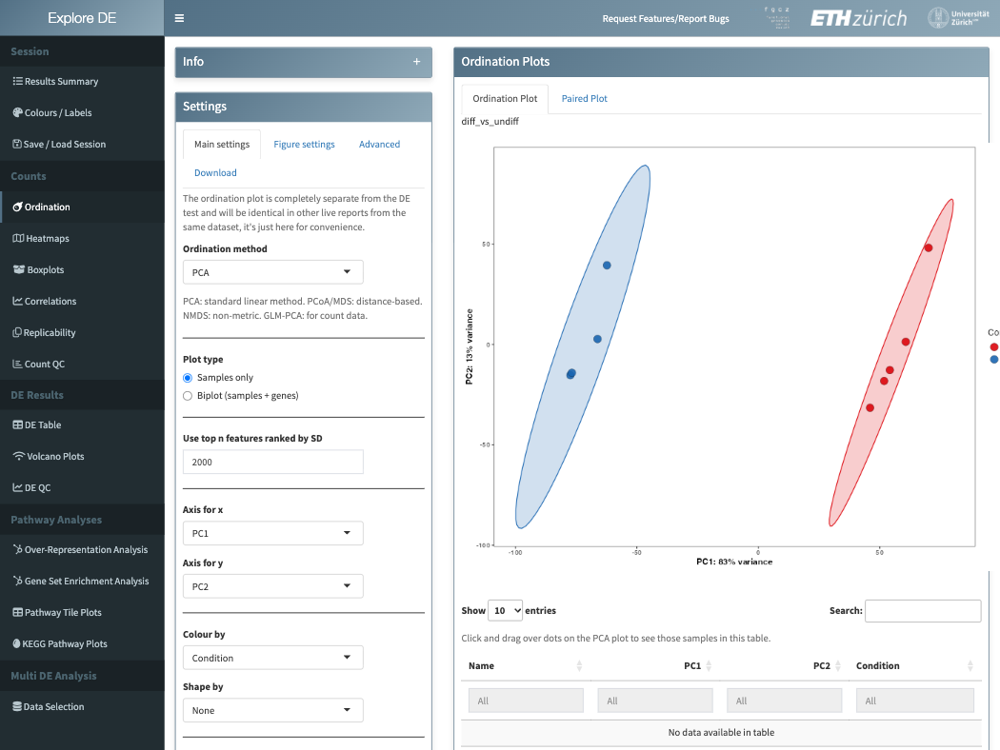
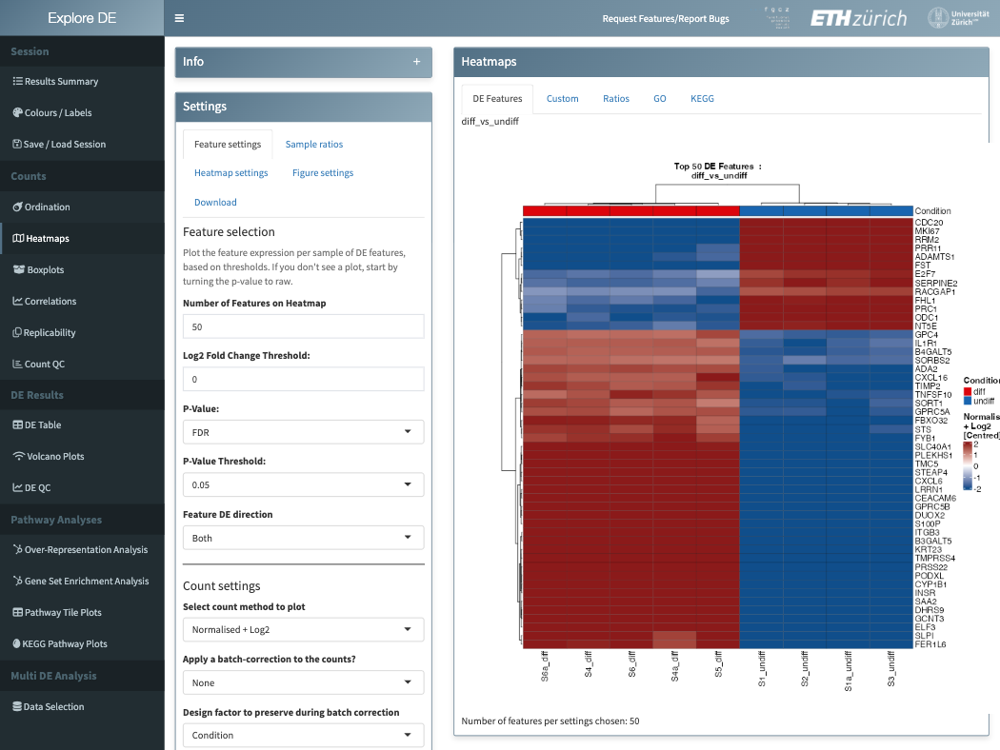
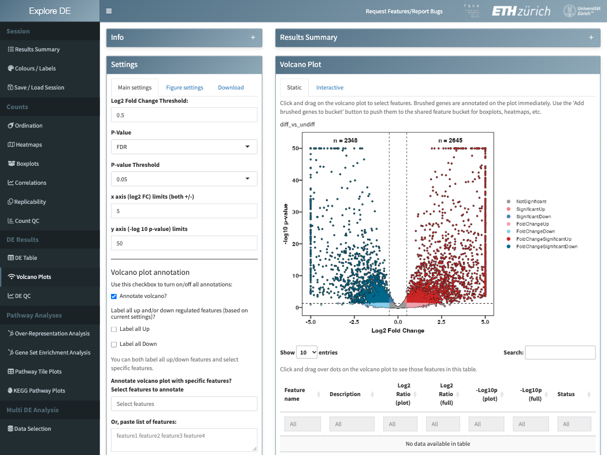

exploreDE: interactive exploration of differential expression results
Peter Leary and Witold Wolski, Functional Genomics Center Zurich
Source:vignettes/exploreDE.Rmd
exploreDE.RmdOverview
exploreDE is a Shiny app for looking at the results of a differential expression (DE) analysis and turning them into figures. It is written for the person who ran the experiment: the plots are point and click, and figures download as PDF, SVG or PNG, tables as Excel files.
It handles three kinds of data:
- bulk RNA-seq, at gene or transcript level;
- proteomics, at protein, peptide or phosphosite level;
- CRISPR screen guide counts.
It opens:
- an AnnData
.h5adfile in the exploreDE/1.0 layout.build_explore_h5ad()writes one from counts, a sample table, and optionally DE tables (DESeq2, edgeR, limma, prolfqua, SAINTexpress) and clusterProfiler enrichment results; - the
SummarizedExperimentresults of the FGCZ SUSHI (RNA-seq) and prolfqua (proteomics) pipelines; - the
AnnData.h5adwritten by the prolfquapp DEA.
This vignette shows how to start the app, what its tabs do, and how
to open a dataset in R. The companion vignette
vignette("bring-your-own-data", package = "exploreDE")
explains how to build a file from your own results.
exploreDE and Bioconductor
exploreDE is built on Bioconductor data structures and methods:
- it opens
SummarizedExperimentobjects, directly withexploreDE(se)ornew_explore_dataset(se), and AnnData files through anndataR;build_explore_h5ad()takes aSummarizedExperimentor aDESeqDataSet; - it computes variance-stabilised counts with DESeq2
(
vst()), removes batch effects with limma (removeBatchEffect()), draws heatmaps with ComplexHeatmap and shows clusterProfiler enrichment results with enrichplot.
Other Bioconductor packages explore expression data interactively:
- iSEE explores any
SummarizedExperiment, including its row and column metadata, in linked and extensible panels; - pcaExplorer visualises RNA-seq data through principal components analysis;
- ideal works on RNA-seq datasets downstream of the differential expression step, with a report template for reproducibility;
- GeneTonic combines RNA-seq differential expression and functional enrichment results, and captures the genes and gene sets highlighted in a session in an HTML report;
- debrowser provides interactive plots and tables for differential gene and region expression studies.
exploreDE differs in what it opens and who it is for:
- one app for RNA-seq, proteomics (protein, peptide and phosphosite level) and CRISPR screen results;
- it shows DE and enrichment results that a pipeline has already computed (DESeq2, edgeR, limma, prolfqua, SAINTexpress, clusterProfiler) rather than running the test itself;
- it compares the contrasts of several datasets in its Multi DE tabs;
- its figures are point and click, for the experimenter rather than the analyst, and its settings are saved and restored as JSON session files.
Installation
install.packages("BiocManager")
BiocManager::install("exploreDE")A few features need packages that are only suggested. Without them, the app hides the feature or shows plain text:
Starting the app
library(exploreDE)
exploreDE() # landing page: upload a file, or load the demo dataset
exploreDE("my_data.h5ad") # open a file directly
exploreDE(c("a.h5ad", "b.h5ad")) # compare the contrasts of several files
exploreDE(se) # open a SummarizedExperiment or AnnData objectOn the landing page, Load a demo dataset instead
opens the RNA-seq comparison that ships with the package: 9 samples in
two groups (diff, undiff), about 21,000 genes,
one DESeq2 contrast, and its GO over-representation and gene set
enrichment results. The screenshots below show it.
A tour of the app
The menu on the left shows only the tabs the loaded data supports:
| Menu group | Tabs | Shown when |
|---|---|---|
| Session | Results Summary, Colours / Labels, Save / Load Session | always |
| Counts | Ordination, Heatmaps, Boxplots, Correlations, Replicability, Count QC | always; Count QC for RNA-seq and CRISPR data |
| DE Results | DE Table, Volcano Plots, DE QC | the dataset has DE results |
| Pathway Analyses | Over-Representation Analysis, Gene Set Enrichment Analysis, Pathway Tile Plots, KEGG Pathway Plots | RNA-seq with DE results; tiles need GO annotation or a KEGG organism; KEGG needs human, mouse or rat |
| Multi DE Analysis | Data Selection, Integrated DE Table, Multi-Contrast Boxplots, Upset/Venn Plots, DE Tile Plots, and pathway bubble plots and heatmaps for RNA-seq | contrasts are loaded in Data Selection |
Every tab has its settings on the left and the figure on the right; the figure’s size, fonts and download format are under Figure settings or Download. Two things are shared across tabs:
-
Feature bucket. Features picked in one place go
into one list: rows of the DE table, points brushed in the volcano plot,
a pasted list of names, or a name pattern such as
Hsp*. The boxplots, heatmaps and tile plots read that list. - Colours and labels. Group colours and display labels are set once, in Colours / Labels, and apply to every figure.
Ordination shows the samples on their first principal components (PCA), or with PCoA, NMDS or GLM-PCA, coloured and shaped by the sample factors:

Heatmaps shows the counts of the top DE features, a custom feature list, sample ratios, or the genes of a GO term or KEGG pathway. Counts can be variance-stabilised, centred or batch-corrected first:

Volcano Plots shows the log2 fold change against the p-value or FDR of every feature, with an MA plot below. Brushing points lists them in the table below the plot and can add them to the feature bucket:

Save / Load Session downloads the settings of every
tab as one .json file, which restores them on the same
dataset later. The file holds settings only, no data.
Datasets in R
Every tab reads its data through one interface, an
ExploreDataset object. new_explore_dataset()
returns the same object in R, from a file path, a link or a
SummarizedExperiment. This is useful for checking a file
before opening it in the app, or for reusing the numbers the app
shows.
library(exploreDE)
se <- readRDS(system.file("examples/genomics/deResult.rds", package = "exploreDE"))
eds <- new_explore_dataset(se)
eds
#> <ExploreDatasetSE_RNASeq (se)>
#> data_type: RNASeq
#> feature_id_kind: gene
#> organism: Homo sapiens
#> ref_build: Homo_sapiens/GENCODE/GRCh38.p13/Annotation/Release_42-2023-01-30
#> samples x features: 9 x 21057
#> factors (1):
#> Condition (primary): diff, undiff
#> contrasts (1): diff_vs_undiff
#> primary_contrast: diff_vs_undiff
#> assays: counts, normalised, normalised_log2, vst, fpkm, tpm
#> enrichment: ora, gseaThe DE table of a contrast has the statistics under fixed names,
whatever the pipeline called them: effect_log2fc,
score_pvalue and score_fdr.
de <- eds$de("diff_vs_undiff")
top <- de[order(de$score_fdr), c("display_name", "effect_log2fc", "score_fdr")]
head(top)
#> display_name effect_log2fc score_fdr
#> DHRS9 DHRS9 6.325017 2.822940e-289
#> B4GALT5 B4GALT5 3.275219 2.834778e-210
#> GCNT3 GCNT3 7.095957 7.652826e-185
#> SAA2 SAA2 5.864014 2.400166e-184
#> CXCL6 CXCL6 7.121160 1.069706e-163
#> FST FST -5.094279 4.053330e-162
sum(de$score_fdr < 0.05 & abs(de$effect_log2fc) > 1, na.rm = TRUE)
#> [1] 3718Assays come by canonical name. The app computes vst,
fpkm and tpm from the counts when the file
does not hold them:
eds$assay_names()
#> [1] "counts" "normalised" "normalised_log2" "vst"
#> [5] "fpkm" "tpm"
eds$assay("normalised_log2")[1:3, 1:4]
#> S1_undiff S2_undiff S3_undiff S4_diff
#> TSPAN6 8.250235 7.769565 8.650166 10.024844
#> TNMD 3.321928 3.321928 3.321928 3.321928
#> DPM1 6.472590 5.293672 7.262189 6.347823
eds$samples()[, "Condition", drop = FALSE]
#> Condition
#> S1_undiff undiff
#> S2_undiff undiff
#> S3_undiff undiff
#> S4_diff diff
#> S5_diff diff
#> S6_diff diff
#> S1a_undiff undiff
#> S4a_diff diff
#> S6a_diff diffvalidate_explore_dataset() checks that the dataset is
consistent: factors, contrasts, the DE statistics and the assays.
A proteomics result from prolfqua opens the same way:
se_prot <- readRDS(system.file("examples/proteomics/SummarizedExperiment.rds", package = "exploreDE"))
new_explore_dataset(se_prot)
#> <ExploreDatasetSE_Proteomics (se)>
#> data_type: proteomics
#> feature_id_kind: protein
#> organism: NA
#> ref_build: NA
#> samples x features: 6 x 1384
#> factors (3):
#> G_ (primary): A, B
#> CONTROL: C, T
#> isotopeLabel: light
#> contrasts (1): B_vs_A
#> primary_contrast: B_vs_A
#> assays: intensities
#> enrichment: (none)Your own data
build_explore_h5ad() writes an exploreDE file from any
pipeline’s results. Here it rebuilds the demo dataset from its parts:
counts, the sample table, the gene annotation and the DE table.
library(SummarizedExperiment)
#> Loading required package: MatrixGenerics
#> Loading required package: matrixStats
#>
#> Attaching package: 'MatrixGenerics'
#> The following objects are masked from 'package:matrixStats':
#>
#> colAlls, colAnyNAs, colAnys, colAvgsPerRowSet, colCollapse,
#> colCounts, colCummaxs, colCummins, colCumprods, colCumsums,
#> colDiffs, colIQRDiffs, colIQRs, colLogSumExps, colMadDiffs,
#> colMads, colMaxs, colMeans2, colMedians, colMins, colOrderStats,
#> colProds, colQuantiles, colRanges, colRanks, colSdDiffs, colSds,
#> colSums2, colTabulates, colVarDiffs, colVars, colWeightedMads,
#> colWeightedMeans, colWeightedMedians, colWeightedSds,
#> colWeightedVars, rowAlls, rowAnyNAs, rowAnys, rowAvgsPerColSet,
#> rowCollapse, rowCounts, rowCummaxs, rowCummins, rowCumprods,
#> rowCumsums, rowDiffs, rowIQRDiffs, rowIQRs, rowLogSumExps,
#> rowMadDiffs, rowMads, rowMaxs, rowMeans2, rowMedians, rowMins,
#> rowOrderStats, rowProds, rowQuantiles, rowRanges, rowRanks,
#> rowSdDiffs, rowSds, rowSums2, rowTabulates, rowVarDiffs, rowVars,
#> rowWeightedMads, rowWeightedMeans, rowWeightedMedians,
#> rowWeightedSds, rowWeightedVars
#> Loading required package: GenomicRanges
#> Loading required package: stats4
#> Loading required package: BiocGenerics
#> Loading required package: generics
#>
#> Attaching package: 'generics'
#> The following objects are masked from 'package:base':
#>
#> as.difftime, as.factor, as.ordered, intersect, is.element, setdiff,
#> setequal, union
#>
#> Attaching package: 'BiocGenerics'
#> The following objects are masked from 'package:stats':
#>
#> IQR, mad, sd, var, xtabs
#> The following object is masked from 'package:utils':
#>
#> data
#> The following objects are masked from 'package:base':
#>
#> anyDuplicated, aperm, append, as.data.frame, basename, cbind,
#> colnames, dirname, do.call, duplicated, eval, evalq, Filter, Find,
#> get, grep, grepl, is.unsorted, lapply, Map, mapply, match, mget,
#> order, paste, pmax, pmax.int, pmin, pmin.int, Position, rank,
#> rbind, Reduce, rownames, sapply, saveRDS, scale, sequence, table,
#> tapply, transform, unique, unsplit, which.max, which.min
#> Loading required package: S4Vectors
#>
#> Attaching package: 'S4Vectors'
#> The following object is masked from 'package:utils':
#>
#> findMatches
#> The following objects are masked from 'package:base':
#>
#> expand.grid, I, unname
#> Loading required package: IRanges
#> Loading required package: Seqinfo
#> Loading required package: Biobase
#> Welcome to Bioconductor
#>
#> Vignettes contain introductory material; view with
#> 'browseVignettes()'. To cite Bioconductor, see
#> 'citation("Biobase")', and for packages 'citation("pkgname")'.
#>
#> Attaching package: 'Biobase'
#> The following object is masked from 'package:MatrixGenerics':
#>
#> rowMedians
#> The following objects are masked from 'package:matrixStats':
#>
#> anyMissing, rowMedians
out <- file.path(tempdir(), "demo.h5ad")
build_explore_h5ad(
x = list(counts = assay(se, "counts"), normalised = assay(se, "xNorm")),
out = out,
omics = "rnaseq",
organism = "Homo sapiens",
coldata = colData(se),
rowdata = rowData(se),
factors = "Condition [Factor]",
de = list(diff_vs_undiff = rowData(se))
)
new_explore_dataset(out)$contrasts()
#> [1] "diff_vs_undiff"
exploreDE(out)build_explore_h5ad() also takes a
SummarizedExperiment as it is: every assay becomes a layer
of the file under its name, here the prolfqua result’s raw and
transformed intensities.
prot_h5ad <- build_explore_h5ad(
se_prot,
out = file.path(tempdir(), "prot.h5ad"),
omics = "proteomics",
factors = "G_"
)
new_explore_dataset(prot_h5ad)$assay_names()
#> [1] "intensities" "intensities_raw"The column names of the DE table do not need to follow a convention:
a dictionary recognises the usual names of DESeq2, edgeR, limma,
prolfqua and SAINTexpress.
vignette("bring-your-own-data", package = "exploreDE")
covers counts-only files, proteomics, pathway results, organisms without
an annotation package, and what to do when a column is not
recognised.
Getting help
- Questions: the Bioconductor support site, https://support.bioconductor.org, with the tag
exploreDE - Bugs and feature requests: https://github.com/fgcz/exploreDE/issues
Session info
sessionInfo()
#> R version 4.6.2 (2026-10-29)
#> Platform: x86_64-pc-linux-gnu
#> Running under: Ubuntu 26.04.1 LTS
#>
#> Matrix products: default
#> BLAS: /usr/lib/x86_64-linux-gnu/openblas-pthread/libblas.so.3
#> LAPACK: /usr/lib/x86_64-linux-gnu/openblas-pthread/libopenblasp-r0.3.32.so; LAPACK version 3.12.0
#>
#> locale:
#> [1] LC_CTYPE=C.UTF-8 LC_NUMERIC=C LC_TIME=C.UTF-8
#> [4] LC_COLLATE=C.UTF-8 LC_MONETARY=C.UTF-8 LC_MESSAGES=C.UTF-8
#> [7] LC_PAPER=C.UTF-8 LC_NAME=C LC_ADDRESS=C
#> [10] LC_TELEPHONE=C LC_MEASUREMENT=C.UTF-8 LC_IDENTIFICATION=C
#>
#> time zone: UTC
#> tzcode source: system (glibc)
#>
#> attached base packages:
#> [1] stats4 stats graphics grDevices utils datasets methods
#> [8] base
#>
#> other attached packages:
#> [1] SummarizedExperiment_1.43.0 Biobase_2.73.2
#> [3] GenomicRanges_1.65.4 Seqinfo_1.3.2
#> [5] IRanges_2.47.5 S4Vectors_0.51.10
#> [7] BiocGenerics_0.59.13 generics_0.1.4
#> [9] MatrixGenerics_1.25.0 matrixStats_1.5.0
#> [11] exploreDE_0.99.0 BiocStyle_2.41.0
#>
#> loaded via a namespace (and not attached):
#> [1] splines_4.6.2 later_1.4.8
#> [3] ggplotify_0.1.4 tibble_3.3.1
#> [5] polyclip_1.10-7 enrichit_0.2.7
#> [7] lifecycle_1.0.5 httr2_1.3.0
#> [9] rstatix_1.1.0 rprojroot_2.1.1
#> [11] processx_3.9.0 lattice_0.23-1
#> [13] MASS_7.3-66 backports_1.5.1
#> [15] magrittr_2.0.5 plotly_4.12.1
#> [17] sass_0.4.10 rmarkdown_2.32
#> [19] jquerylib_0.1.4 yaml_2.3.12
#> [21] httpuv_1.6.17 otel_0.3.0
#> [23] ggtangle_0.1.5 zip_3.0.2
#> [25] askpass_1.2.1 reticulate_1.47.0
#> [27] ggvenn_0.1.19 cowplot_1.2.0
#> [29] DBI_1.3.0 RColorBrewer_1.1-3
#> [31] abind_1.4-8 purrr_1.2.2
#> [33] yulab.utils_0.2.5 tweenr_2.0.3
#> [35] rappdirs_0.3.4 aisdk_1.4.12
#> [37] gdtools_0.6.0 enrichplot_1.99.8
#> [39] ggrepel_0.9.8 tidytree_0.4.9
#> [41] pkgdown_2.2.1 svglite_2.2.2
#> [43] codetools_0.2-20 DelayedArray_0.39.8
#> [45] scuttle_1.23.2 DOSE_4.7.4
#> [47] DT_0.34.0 xml2_1.6.0
#> [49] ggforce_0.5.0 tidyselect_1.2.1
#> [51] aplot_0.3.2 farver_2.1.2
#> [53] jsonlite_2.0.0 waiter_0.2.5.1
#> [55] Formula_1.2-6 systemfonts_1.3.2
#> [57] tools_4.6.2 ggnewscale_0.5.2
#> [59] treeio_1.37.1 ragg_1.5.2
#> [61] Rcpp_1.1.2 glue_1.8.1
#> [63] SparseArray_1.13.4 BiocBaseUtils_1.15.1
#> [65] xfun_0.62 qvalue_2.45.0
#> [67] dplyr_1.2.1 shinydashboard_0.7.3
#> [69] withr_3.0.3 BiocManager_1.30.27
#> [71] fastmap_1.2.0 GGally_2.5.0
#> [73] rhdf5filters_1.25.5 shinyjs_2.1.1
#> [75] openssl_2.5.0 callr_3.8.0
#> [77] digest_0.6.39 R6_2.6.1
#> [79] mime_0.13 gridGraphics_0.5-1
#> [81] textshaping_1.0.5 colorspace_2.1-4
#> [83] GO.db_3.24.0 gtools_3.9.5
#> [85] RSQLite_3.53.3 tidyr_1.3.2
#> [87] fontLiberation_0.1.0 data.table_1.18.6.1
#> [89] S4Arrays_1.13.2 httr_1.4.9
#> [91] htmlwidgets_1.6.4 scatterpie_0.2.6
#> [93] ggstats_0.14.0 pkgconfig_2.0.3
#> [95] gtable_0.3.6 blob_1.3.0
#> [97] S7_0.2.2 SingleCellExperiment_1.35.2
#> [99] XVector_0.53.0 clusterProfiler_4.21.4
#> [101] htmltools_0.5.9 fontBitstreamVera_0.1.1
#> [103] carData_3.0-6 bookdown_0.48
#> [105] scales_1.4.0 kableExtra_1.4.1
#> [107] fresh_0.2.2 png_0.1-9
#> [109] ggfun_0.2.2 knitr_1.52
#> [111] rstudioapi_0.19.0 reshape2_1.4.5
#> [113] uuid_1.2-2 nlme_3.1-171
#> [115] anndataR_1.3.5 cachem_1.1.0
#> [117] rhdf5_2.57.20 stringr_1.6.0
#> [119] shinycssloaders_1.1.0 parallel_4.6.2
#> [121] miniUI_0.1.2 vipor_0.4.7
#> [123] AnnotationDbi_1.75.2 desc_1.4.3
#> [125] pillar_1.11.1 grid_4.6.2
#> [127] vctrs_0.7.3 promises_1.5.0
#> [129] ggpubr_1.0.0 car_3.1-5
#> [131] tidydr_0.0.7 beachmat_2.29.3
#> [133] xtable_1.8-8 cluster_2.1.8.3
#> [135] beeswarm_0.4.0 evaluate_1.0.5
#> [137] cli_3.6.6 compiler_4.6.2
#> [139] rlang_1.3.0 crayon_1.5.3
#> [141] sortable_0.6.0 ggsignif_0.6.4
#> [143] ps_1.9.3 plyr_1.8.9
#> [145] fs_2.1.0 ggbeeswarm_0.7.3
#> [147] ggiraph_0.9.6 stringi_1.8.9
#> [149] BiocParallel_1.47.0 viridisLite_0.4.3
#> [151] assertthat_0.2.1 Biostrings_2.81.9
#> [153] lazyeval_0.2.3 colourpicker_1.3.0
#> [155] GOSemSim_2.39.4 fontquiver_0.2.1
#> [157] Matrix_1.7-6 patchwork_1.3.2
#> [159] bit64_4.8.6 learnr_0.11.6
#> [161] Rhdf5lib_2.1.0 ggplot2_4.0.4
#> [163] KEGGREST_1.53.6 shiny_1.14.0
#> [165] igraph_2.3.4 broom_1.0.13
#> [167] memoise_2.0.1 bslib_0.12.0
#> [169] ggtree_4.3.0 bit_4.6.0
#> [171] officer_0.7.8 ape_5.8-1
#> [173] gson_0.2.2